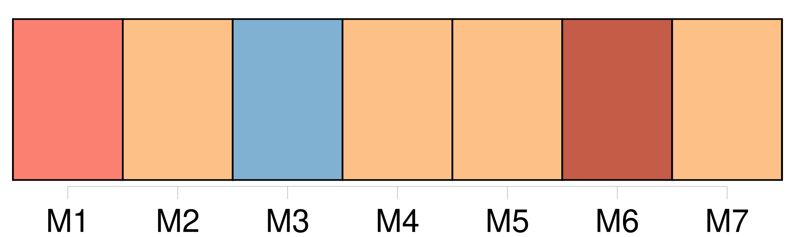

Longueur nb maillons : 136 mentions |
 |
Je ne sais combien de temps je méditai sur ces deux côtés de la médaille humaine ; mais soudain le rire étouffé d’ [une jeune femme] me réveilla. [6 phrases] Il avait surgi sans cérémonie auprès d’ [une des plus ravissantes femmes de Paris] , danseuse élégante et jeune, aux formes délicates, une de ces figures aussi fraîches que l’ est celle d’ un enfant, blanches et roses, et si frêles, si transparentes, qu’ un regard d’ homme semble devoir les pénétrer, comme les rayons du soleil traversent une glace pure. [1 phrases] J’ avais amené [cette jeune femme] au bal de madame de Lanty. Comme [elle] venait pour la première fois dans cette maison, je [lui] pardonnai [son] rire étouffé ; mais je [lui] fis vivement je ne sais quel signe impérieux qui [la] rendit tout interdite et [lui] donna du respect pour [son] voisin. [Elle] s’ assit près de moi. Le vieillard ne voulut pas quitter [cette délicieuse créature] , à [laquelle] il s’ attacha capricieusement avec cette obstination muette et sans cause apparente, dont sont susceptibles les gens extrêmement âgés, et qui les fait ressembler à des enfants. Pour s’ asseoir auprès de [la jeune dame] , il lui fallut prendre un pliant. [3 phrases]
[La jeune femme] me pressa vivement la main, comme si [elle] eût cherché à se garantir d’ un précipice, et [frissonna] quand cet homme, qu’ [elle] regardait, tourna sur elle deux yeux sans chaleur, deux yeux glauques qui ne pouvaient se comparer qu’ à de la nacre ternie.
— [J’] ai peur, me dit [-elle] en se penchant à mon oreille. — [Vous] pouvez parler, répondis -je. [3 phrases] [Elle] s’ enhardit alors assez pour examiner pendant un moment cette créature sans nom dans le langage humain, forme sans substance, être sans vie, ou vie sans action. [Elle] était sous le charme de cette craintive curiosité qui pousse les femmes à se procurer des émotions dangereuses, à voir des tigres enchaînés, à regarder des boas, en s’ effrayant de n’ en être séparées que par de faibles barrières. [23 phrases] Voir, auprès de ces débris humains, [une jeune femme] [dont] le cou, les bras et le corsage étaient nus et blancs ; [dont] les formes pleines et verdoyantes de beauté, [dont] les cheveux bien plantés sur un front d’ albâtre inspiraient l’ amour, [dont] les yeux ne recevaient pas, mais répandaient la lumière, qui était suave, fraîche, et [dont] les boucles vaporeuses, [dont] l’ haleine embaumée semblaient trop lourdes, trop dures, trop puissantes pour cette ombre, pour cet homme en poussière ; ah!! [2 phrases] — Il sent le cimetière, s’ écria [la jeune femme épouvantée] [qui] me pressa comme pour s’ assurer de ma protection, et [dont] les mouvements tumultueux me dirent qu’ [elle] avait grand’peur. — C’ est une horrible vision, reprit [-elle] , je ne saurais rester là plus long-temps. [2 phrases] [Elle] porta la main sur le phénomène avec cette hardiesse que les femmes puisent dans la violence de leurs désirs ; mais une sueur froide sortit de [ses] pores, car aussitôt qu’ [elle] eut touché le vieillard, [elle] entendit un cri semblable à celui d’ une crécelle. [3 phrases] [La jeune femme] aurait voulu être au fond de la Seine. [Elle] prit mon bras et m’ entraîna vers un boudoir. [2 phrases]
[Ma compagne] se jeta sur un divan, palpitant d’ effroi, sans savoir où [elle] était.
— [Madame] , [vous] êtes folle, [lui] dis -je. — Mais, reprit [-elle] après un moment de silence pendant lequel je [l’] admirai, est -ce [ma] faute?? [1 phrases] — Allons, répondis -je, [vous] imitez les sots.
[Vous] prenez un petit vieillard pour un spectre. — Taisez -vous, répliqua-t [-elle] avec cet air imposant et railleur que toutes les femmes savent si bien prendre quand elles veulent avoir raison. [1 phrases] s’ écria-t [-elle] en regardant autour d’ [elle] [4 phrases]
ajouta-t [-elle] en se levant, et allant se mettre en face d’ une toile magnifiquement encadrée. [4 phrases]
me demanda-t [-elle] après avoir examiné, non sans un doux sourire de contentement, la grâce exquise des contours, la pose, la couleur, les cheveux, tout enfin.
— Il est trop beau pour un homme, ajouta-t [-elle] après un examen pareil à celui qu’ [elle] aurait fait d’ une rivale. [3 phrases] — C’ est un portrait, [lui] répondis -je. [1 phrases]
Mais ce grand peintre n’ a jamais vu l’ original, et [votre] admiration sera moins vive peut-être quand [vous] saurez que cette académie a été faite d’ après une statue de femme. [2 phrases]
— [Je] veux le savoir, ajouta-t [-elle] vivement. — Je crois, [lui] dis -je, que cet Adonis représente un …… [2 phrases] J’ eus la douleur de [la] voir abîmée dans la contemplation de cette figure. [Elle] s’ assit en silence, je me mis auprès d’ [elle] , et [lui] pris la main sans qu’ [elle] s’ en aperçût!! [19 phrases] me demanda [ma jeune partenaire] [1 phrases] [Je] crois rêver.
Où suis [-je] ? — [Vous] !!
répondis -je, [vous] , [madame] , [qui] êtes exaltée et [qui] , comprenant si bien les émotions les plus imperceptibles, savez cultiver dans un cœur d’ homme le plus délicat des sentiments, sans le flétrir, sans le briser dès le premier jour, [vous] [qui] avez pitié des peines du cœur, et [qui] à l’ esprit d’ une Parisienne joignez une âme passionnée digne de l’ Italie ou de l’ Espagne …
[Elle] vit bien que mon langage était empreint d’ une ironie amère ; et, alors, sans avoir l’ air d’ y prendre garde, [elle] m’ interrompit pour dire : vous [me] faites à votre goût. [1 phrases]
Vous voulez que [je] ne sois pas [moi] [1 phrases] je ne veux rien, m’ écriai -je épouvanté de [son] attitude sévère.
Au moins est -il vrai que [vous] aimez à entendre raconter l’ histoire de ces passions énergiques enfantées dans nos cœurs par les ravissantes femmes du Midi? [4 phrases]
bien, j’ irai demain soir chez [vous] vers neuf heures, et je [vous] révélerai ce mystère.
— Non, répondit [-elle] d’ un air mutin, [je] veux l’ apprendre sur-le-champ.
— [Vous] ne m’ avez pas encore donné le droit de [vous] obéir quand [vous] dites : Je veux. — En ce moment, répondit [-elle] avec une coquetterie désespérante, [j’] ai le plus vif désir de connaître ce secret.
Demain, [je] ne vous écouterai peut-être pas … [Elle] sourit, et nous nous séparâmes ; [elle] toujours aussi fière, aussi rude, et moi toujours aussi ridicule en ce moment que toujours.
[Elle] eut l’ audace de valser avec un jeune aide-de-camp, et je restai tour à tour fâché, boudeur, admirant, aimant, jaloux.
— À demain, me dit [-elle] vers deux heures du matin, quand [elle] sortit du bal. — Je n’ irai pas, pensais -je, et je [t’] abandonne. [Tu] es plus capricieuse, plus fantasque mille fois peut-être …… [1 phrases] Le lendemain, nous étions devant un bon feu, dans un petit salon élégant, assis tous deux ; [elle] sur une causeuse ; moi, sur des coussins, presque à [ses] pieds, et mon œil sous le sien. [4 phrases]
— Allons, dit [-elle] , [j’] écoute. [2 phrases]
Si je m’ enthousiasme, [vous] me ferez taire. [111 phrases]
— Mais, me dit [madame de Rochefide] en m’ interrompant, [je] ne vois encore ni Marianina ni son petit vieillard.
— [Vous] ne voyez que lui, m’ écriai -je impatienté comme un auteur auquel on fait manquer l’ effet d’ un coup de théâtre. « Depuis quelques jours, repris -je après une pause, Sarrasine était si fidèlement venu s’ installer dans sa loge, et ses regards exprimaient tant d’ amour, que sa passion pour la voix de Zambinella aurait été la nouvelle de tout Paris, si cette aventure s’ y fût passée ; mais en Italie, [madame] , au spectacle, chacun y assiste pour son compte, avec ses passions, avec un intérêt de cœur qui exclut l’ espionnage des lorgnettes. [48 phrases] dit [la marquise] [284 phrases]
— Mais, me dit [madame de Rochefide] , quel rapport existe-t -il entre cette histoire et le petit vieillard que nous avons vu chez les Lanty? — [Madame] , le cardinal Cicognara se rendit maître de la statue de Zambinella et la fit exécuter en marbre, elle est aujourd’hui dans le musée Albani. [1 phrases]
Le portrait qui [vous] a montré Zambinella à vingt ans, un instant après l’ avoir vu centenaire, a servi plus tard pour l’ Endymion de Girodet, [vous] avez pu en reconnaître le type dans l’ Adonis. [1 phrases] — Ne saurait être, [madame] , que le grand-oncle de Marianina.
[Vous] devez concevoir maintenant l’ intérêt que madame de Lanty peut avoir à cacher la source d’ une fortune qui provient … [1 phrases]
dit [-elle] en me faisant un geste impérieux. [3 phrases]
[lui] dis -je. [1 phrases]
s’ écria-t [-elle] en se levant et se promenant à grands pas dans la chambre.
[Elle] vint me regarder, et me [dit] d’ une voix altérée : [6 phrases] Demain [je] me ferais dévote si [je] ne savais pouvoir rester comme un roc inaccessible au milieu des orages de la vie. [1 phrases]
Laissez [-moi] seule. [1 phrases]
[lui] dis -je, [vous] savez punir.
— Aurais [-je] tort? [1 phrases] En achevant cette histoire, assez connue en Italie, je puis [vous] donner une haute idée des progrès faits par la civilisation actuelle. [1 phrases] — Paris, dit [-elle] , est une terre bien hospitalière ; il accueille tout, et les fortunes honteuses, et les fortunes ensanglantées. [2 phrases] Personne ne [m’] aura connue!!
[J’] en suis fière. |

|
Il est possible de télécharger la ressource sur la page Ortolang |
Si vous avez des questions ou vous voyez des erreurs, merci d'envoyer un mail à silvia.federzoni89@gmail.com |